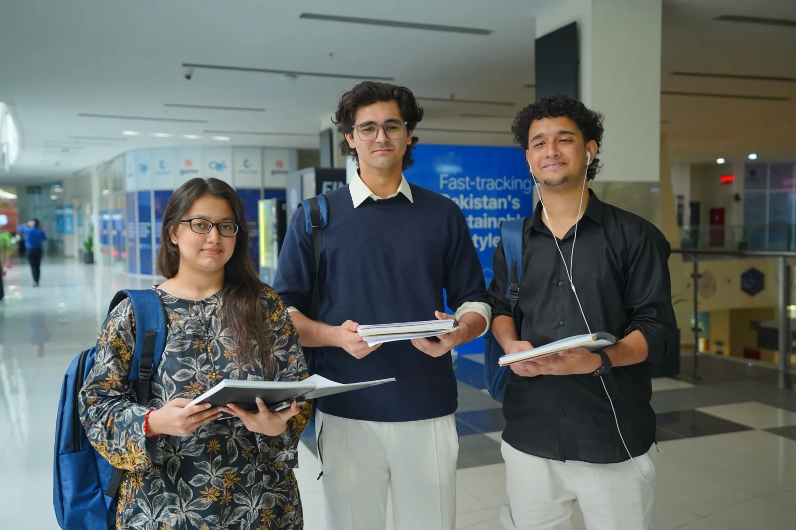
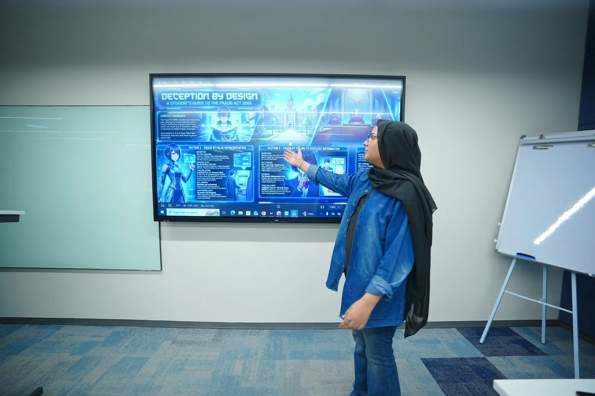
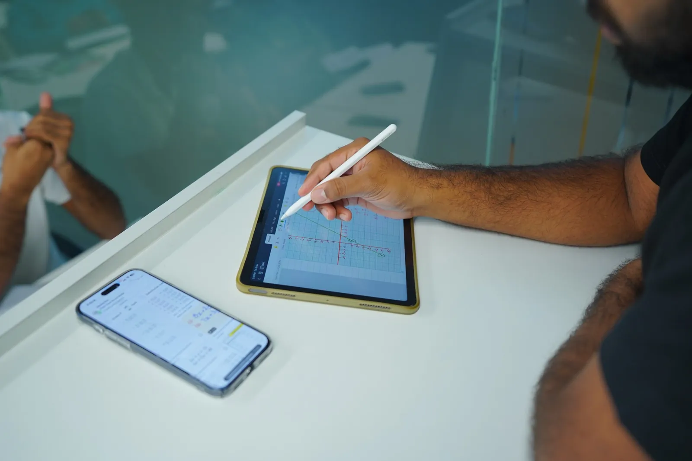
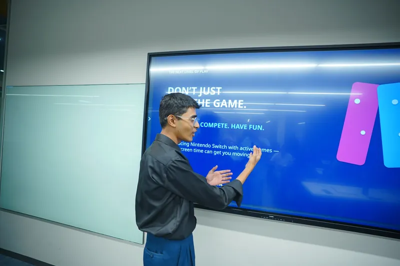
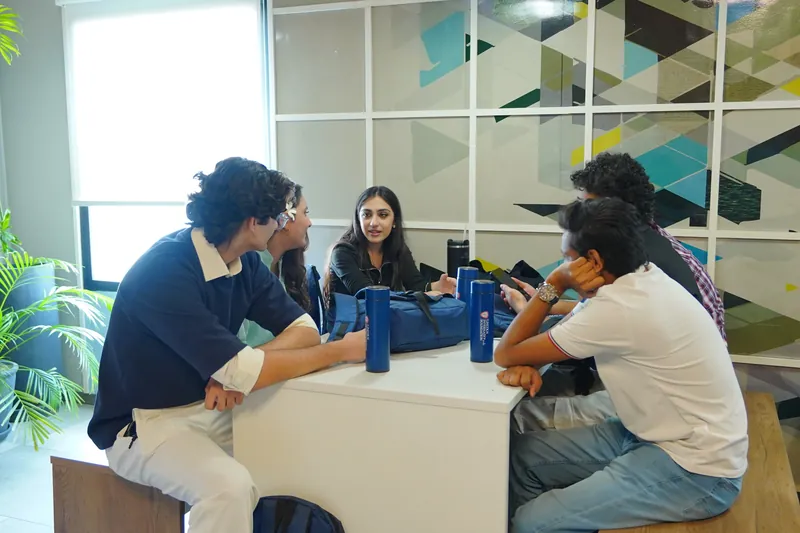
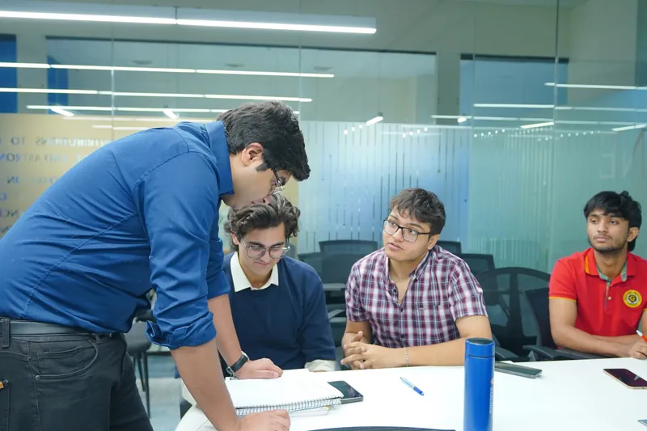
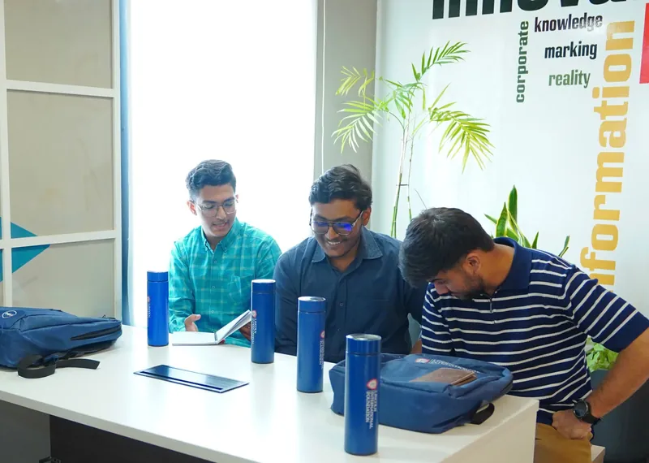
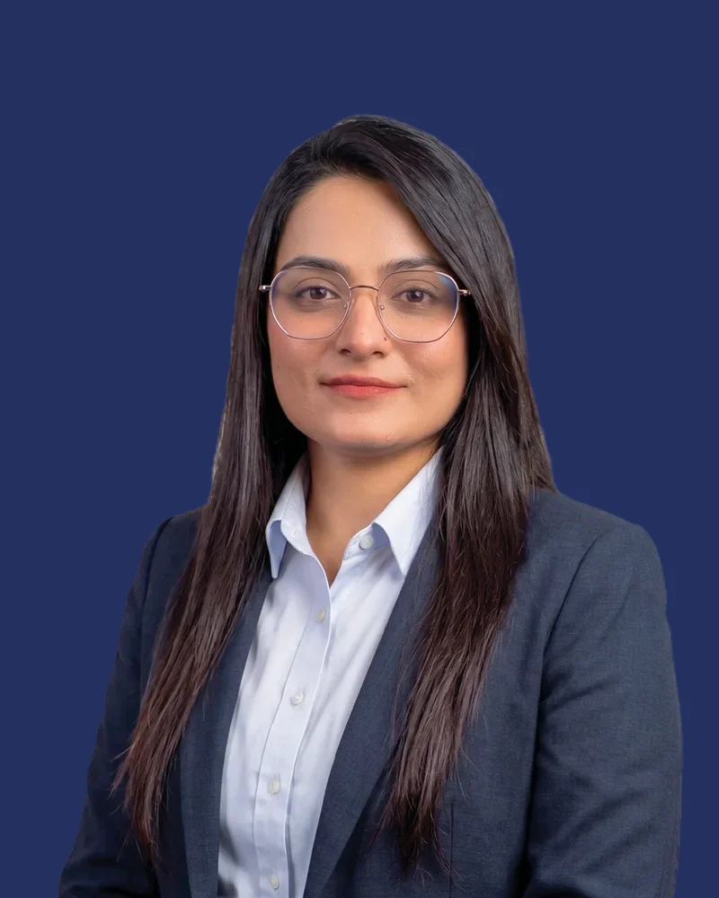

UK-regulated. Accepted worldwide.
Regulated by Ofqual and Qualifications Wales under the RQF, and accepted by universities around the world.
January 2027 intake. Admissions open.
How?
Why?

Why this route
Regulated by Ofqual and Qualifications Wales under the RQF, and accepted by universities around the world.

A faster academic route than the two years of Inter or A Levels.

A focused, university-facing pathway rather than a general school syllabus.

Recognised by 120+ universities, branch campuses and professional bodies.

Research, academic writing, referencing, critical thinking and presentation.

Structured counselling on your destination, field and university.
Length
Two routes through the same qualification. Core units come first. Your optional units follow and shape the degree you move on to.
Classes run on weekdays, in person at NASTP. Not sure which route fits you? Our admissions team will help you choose.
Subjects
Everyone takes the same core units. Tap the plus on any unit to see how it is assessed.
Reading, listening, writing and speaking for university-level English.
Academic reading, writing, listening and speaking for degree study.
An overall 60% in EAP 2.0 meets the English requirement at many universities.
Maths for business, computing and social science degrees.
Research, academic writing, referencing, critical thinking and presenting.

For students interested in organisational management, enterprise and commerce.
Pathway units
Where it leads

For students interested in technology, digital systems and problem-solving.
Pathway units
Where it leads

For students interested in legal systems, advocacy and critical thinking.
Pathway units
Where it leads

For students interested in accounting, finance and taxation.
Pathway units
Where it leads
Optional units are indicative. Ask which units are running for your intake. Exams are sat at the centre on set dates, and all assessment is in English.
Universities
Recognised by universities, branch campuses, business schools and professional bodies for on-campus study worldwide.
Nottingham · Leicester · Reading · Aston · Coventry · Northumbria · Oxford Brookes · Manchester Met · Sheffield Hallam
Queensland · Western Australia · Curtin · La Trobe · Swinburne · Auckland · Massey · Victoria Wellington
Lakehead · York University · Thompson Rivers · Fraser International · Berkeley College · Temple · Post University
Nottingham Malaysia · Reading Malaysia · Curtin Malaysia · Sunway · SIM Singapore · James Cook Singapore
Curtin Dubai · De Montfort Dubai · University of Bolton Academic Centre Ras Al Khaimah
Grenoble Ecole de Management · IU Germany · National College of Ireland · University of London
Examples from NCC Education's progression list. Requirements vary by course. Completing the diploma does not guarantee a place: every application is considered case by case and the university makes the final decision. Medicine, dentistry and engineering usually require A Levels. In the QS World University Rankings by Subject 2025, the diploma is recognised at institutions ranked in the top 100 for Business and Management, Law and Legal Studies, Computer Science and Psychology. Students applying for degrees that need higher English scores should plan for an IELTS sitting.
Student life
Four student-led societies where you build skills and confidence outside the classroom.

Moot courts, debates and legal discussion. Sharpen your argument and public speaking, and get an early feel for legal careers.

Theatre, stagecraft and performance. From script to spotlight, build confidence, creativity and teamwork.

Programming, projects and problem-solving, from your first lines of code to small applications built together.

Volunteering and social impact. Give back through outreach drives and community projects.
Provided to every student to support online learning.
To prepare you for admission to top universities in Pakistan and abroad.
To build your digital skills and improve your employability.
Understand requirements, study planning and undergraduate pathways.
Qualified educators with subject expertise and practical insight.
Someone to talk to, supporting your wellbeing and personal growth.
Hear from professionals and domain specialists.
Leadership
Chairman
Sets LIF's vision and long-term direction.

Project Director
Runs LIF's projects and daily operations.

Head of Programs
Leads teaching quality and student progress.

Head of Partnerships
Builds partnerships with universities and schools.
Faculty
Focused cohorts, real discussion and regular feedback from people with experience inside and outside the classroom.

English
Eight years teaching on international programmes, including NCC, University of Hertfordshire and Pearson. She has also coached PepsiCo managers to speak with confidence in public.

Mathematics
BBA from IBA Karachi and a master's from TIAS School for Business and Society in the Netherlands. Over eight years teaching, from Cambridge O and A Levels to foundation programmes.
Research
Studied Electrical Engineering at LUMS. Over six years in product management, AI and data platforms, and has trained more than 1,500 professionals in data management.
Entry requirements
Choose what you have studied so far.
You need
Five subjects at grade C or above, including English and Mathematics.English. Everyone takes the free NCC Education English Placement Test.
Applicants meeting these criteria may be eligible, subject to assessment and applicable requirements.
Sit down with our admissions team, with your parents if you like, and talk it through. No pressure, just honest advice about what fits you.